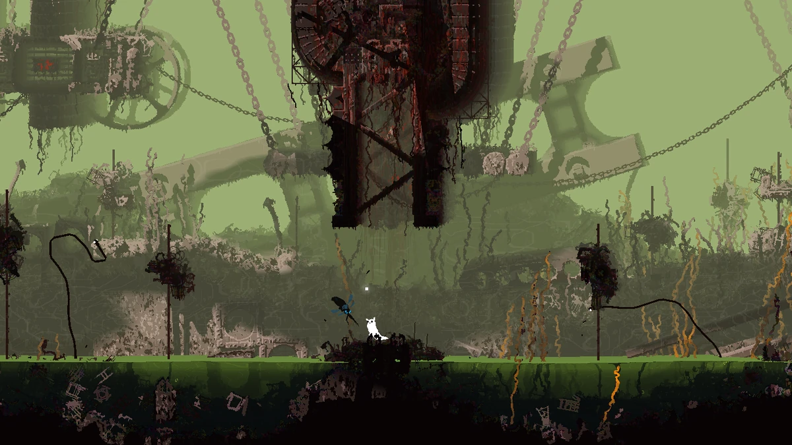
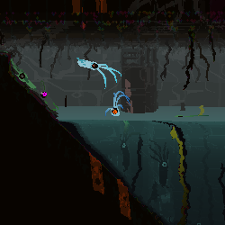
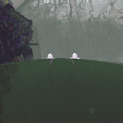

Rainworld
jakub kočí
Rainworld
rainworld je survival platformer hra vydaná v roce 2017 vydavatelem akupara games. Hra byla vyvíjená vývojářem videocult. jedna z věcí které si každý všimne po zapnutí hry je že animace jsou počítačově generované. to pomáhá hře vypadat více živě a jako reálný ekosystém. to mě přivádí k dalšímu bodu, a to herní ekosystém. vše ve hře je pečlivě promyšleno tak aby se vytvořil jeden z nejlepších ekosystémů v jakékoliv hře. každá oblast má svůj vlastní potravní řetězec, někteří živočichové od hráče utečou zatímco jiní si z něj udělají rychlou svačinu. hra obsahuje několik kampaní a každá z nich se odehrává na jiném místě v čase, takže můžete vidět jak se její svět časem vyvíjí, jak některé druhy vymírají a jiné se vyvíjí, a jak jsou celé oblasti zničeny. skrz všechny kampaně, jedna věc zůstává, a to cykly. každý cyklus má jinou délku ale vždy je mezi nimi silný déšť který by zabil vše co by v něm zůstalo. proto hráč musí během cyklu nasbírat dostatek jídla, a dostat se do ůkrytu. nasbírané jídlo použije hráč k hibernaci během deště. délka dešťů není specifikována, ale pravděpodobně bude mezi dvěma týdny až měsícem. na začátku nového cyklu se vše co v posledním cyklu zemřelo znovu oživí. hra bere velikou inspiraci z budhistického náboženství a oživení na konci cyklu je obdoba reinkarnace. další mechanika ve hře je karma. karma se dělí do deseti levelů. pokud přežijete cykl a dostanete se do ůkrytu, posunete se o jeden level nahoru. pokud zemřete posunete se o level dolů. karma se používá hlavně k odemknutí karma brán. tyto brány oddělují jednotlivé oblasti, a potřebují určitý level karmy k odemčení. potřebný level je v každém směru jiný. toto zabraňuje novým hráčům aby se dostali do obtížných oblastí. na konci hry se hráč může z tohoto cyklu vymanit a dostat se do ekvivalentu nirvány. k tomu však potřebuje se dostat na karma level 10
kampaně
základní hra obsahuje tři kampaně. ty se od sebe moc neliší a až na jednu mají stejný cíl. ve všech kampaních hráči hrají jako stvoření jménem slugcat. k tomu co slugcat je se více dostanu v sekci o fauně rainworldu
survivor
první kampaň ve hře je kampaň slugcata jménem survivor. survivor má bílou barvu a je to střední obtížnost hry. na začátku kampaně jsme uvedeni ke kolonii slugcatů která žije spokojeným životem. náhle přijde déšť a jeden ze slugcatů je spláchnut do sítě zatopených trubek kde ho proud rychle odnese pryč od jeho kolonie. po nějakém čase se probudí na novém neznámém místě. cíl kampaně je dostat se zpátky ke své kolonii. toto se však v průběhu kampaně změní na cíl se dostat pryč z cyklu.
monk
další kampaň je kampaň slugcata jménem monk. monk je podle příběhu survivorův sourozenec. na rozdíl od survivora je monk slabší což znamená že bojovat s ostatními tvory je obtížnější. na druhou stranu u nich má monk větší reputaci, což je mechanika kterou se budu zabývat v části života. také má některé jiné mechaniky které pomáhají novým hráčům. jedna z nich je že po prvním otevření karma brány se jí může procházet bez potřebného karma levelu. další z těchto mechanik je že v tmavých oblastech dostane světlo které mu pomůže najít si snadněji cestu. ostatní slugcatové si musí najít zdroj světla nebo se pohybovat poslepu. na začátku kampaně se monk vrhne za survivorem poté co ho uvidí padat do propasti. následně se probudí na stejném místě a začne svojí misi najít svého ztraceného sourozence. s tím se nakonec setká poté co se také dostane z cyklu
hunter
poslední kampaň ze základní hry je hunter. hunter je těžký mód hry zaměřený hlavně na boj. hlavní zbraní použitou proti nepřátelům jsou oštěpy. survivor a monk mohou nést jenom jeden ale hunter může nést jeden na svých zádech. na rozdíl od ostatních kampaní má hunter pouze 30 cyklů na to aby splnil svou misi. to je způsobeno jeho nemocí která ho postupně zabíjí. hunter jako jediný začíná jinde než ostatní dvě kampaně. jeho cílem je dručit neuron s cílem oživit gigantický superpočítač zvaný iterator. co oba pojmy znamenají vysvětlím později. hunter může oživit tento superpočítač nebo se dostat z cyklu a vyléčit se ze své nemoci. to ho dělá jediným slugcatem ze základní hry se dvěma konci. hunterova kampaň obsahuje více nebezpečných stvoření, a dokonce i některé které nejsou viděny v žádné jiné kampani

oblasti
celý svět rainworldu je rozdělen do 12 regionů. každý z nich je od ostatních oddělen karma bránou a obsahuje jiná zvířata a hrozby. tyto regiony se dále dělí na podregiony.
outskirts
první region ve hře je outskirts. je to region kde survivor a monk začínají svoji kampaň. celý region je tvořený ruinami, co vypadá jako opuštěný tovární komplex. region obsahuje velmi málo hrozeb, hlavně zelené a růžové ještěrky a má hráče naučit základní mechaniky. směrem nahoru je spojený s industrial complex, na západ leží farm arrays a na jih drainage system.
zajímavosti
- původně měl region obsahovat temnou podzemní část
- pravá část regionu nemá nic kvůli čemu by se tam mělo chodit
industrial complex
další region je industrial complex. tento region, jak už název napovídá je opuštěný tovární komplex s jednoduchou až střední obtížností a prvním trochu obtížným platformováním. region je na východu spojený se shaded citadel, na západ má outskirts, dolů vede do garbage wastes a nahoru do chimney canopy. měl by to být druhý region do kterého se hráč dostane
zajímavosti
- jedna z perel nalezených v regionu poukazuje na fakt že tato továrna produkovala masky které nyní můžeme vidět na vulturech
- industrial má nejvíce propojení s ostatními regiony

drainage system
dále máme drainage system. poměrně velká oblast se střední obtížností. sestává hlavně ze zatopených trubek ve kterých musíte počítat s tím kde se nadechnete, a dostat se skrz ně co nejrychleji jinak hrozí utopení. oblast je na východě propojena s garbage wastes a ne západě s outskirts a subtrranean
zajímavosti
- drainage system byl jeden ze čtyř regionů obsažených v alpha verzi hry
garbage wastes
další oblast je garbage wastes. původně velmi podobná regionům jako industrial complex, nyní však obrovská skládka. region je hlavně obývaný tvory jménem scavengeři, ke kterým se dostanu později. na západě propojen s industrial complex a drainage system, na východě s shoreline
chimney canopy
dále chimney canopy. region sestává hlavně ze střechy industrial complexu a komínů které z něj rostou. region by se dal rozdělit do tří částí. spodní část je střecha industrial complexu plná zvířat, z nichž většina si z vás udělá svačinu. uprostřed máme samotné komíny se středně obtížným až obtížným platformováním, a na vrcholu máme most mezi dvěma regiony. zdola se napojuje na industrial complex, a most propojuje na východě exterior a na západě sky islands.
zajímavosti
- duha má šanci se objevit na začátku cyklu
- bez downpouru je tento region nejmenší region ve hře s pouze 34 místnostmi
five pebles
další region five pebles. five pebles je jeden ze superpočítačů zvaných iterrators. itteratoři byli vytvořeni starověkou rasou která vybudovala vše co ve světě vidíme, za ůčelem vyřešení velkého problému. tento velký problém zahrnuje nalezení bezpečného způsobu jak se vyprostit z cyklu. nyní, když je tato rasa pryč se jejich ůkol změnil na to jak vyprostit z cyklu sebe. ví se jen o jednom iterratorovi kterému se to podařilo ale ostatní nebyli schopní zjistit jak. samotný itterator je gigantická kvádrovitá struktura na dlouhých nohách, sahající vysoko nad oblaky. na vrcholku všech itteratorů se nachází město, které bylo díky své vysoké poloze v bezpečí před deštěm. slugcat se do tohoto města ale dostat nemůže. samotný itterator je postava o velikosti slugcata, kteerá je za pomocí robotické paže napojena na zbytek své superstruktury. nachází se v poměrně malé místnosti, ke které je připojena údržbová šachta. po vstoupení do místnosti bude five pebles chvíli vytahovat různé hologramy, následně pak dá slugcatovi schopnost rozumět itteratorům. z jeho monologu můžeme zjistit že je velmi frustrovaný faktem že se nemůže dostat z cyklu. poté nasměruje slugcata k místu kde se z cyklu může dostat sám. v hlubinách jeho superstruktury však můžeme najít další zajímavou věc. a to rot. rot je důsledek jednoho z peblesových nepovedených pokusů se dostat z cyklu. tato modrá masa která roste na zdech annebo bere podobu obřího pavouka je naprosto slepá ale má výborný sluch. jakmile něco chytne vtáhne to do sebe bez možnosti ůniku. pebles původně řešil rot tím že ho vyhazoval do garbage wastes, čímž oblast změnil do její dnešní podoby. rot se ale vymknul jeho kontrole a začal se šířit po jeho struktuře. zatím je nejasné co se stane dál. celý region má nulovou gravitaci a nemá žádný déšť. region je na dvou místech připojen k exterioru
zajímavosti
- na konci cyklu všechna zvířata poběží do svých ůkrytů. díky tomu lze tuto oblast s trochou trpělivosti přejít relativně bezpečně
- kameny a oštěpy mohou být hozeny v nulové gravitaci aby poslaly hráče stejným směrem
exterior
dále tu máme exterior. tento region tvoří vnější obal five peblese. region nemá žádný hlavní region, a je místo toho rozdělen do tří podregionů. první podregion je leg. leg je jedna z peblesových nohou. má středně těžké až těžké platformování, a několik jedinců rotu. druhý podregion je underhang. toto je spodní strana samotné superstruktury. slugcat zde musí skákat po platformách visících z hlavní superstruktury. střední populace rotu z něj dělá velmi obtížný region. poslední - the wall. sestává z části zdi superstruktury v mracích, části nad mrakama kde můžeme v pozadí vidět ostatní itteratory, a horní dlouhá místnost s peblesovým městem v pozadí. populace bílých ještěrek z tohoto podregionu dělá středně obtížný podregion. region je kromě five pebles propojen v dolní části s shaded citadel, a ve spodní části zdi s chimney canopy.
zajímavosti
- v leg mají bílé ještěrky speciální vlastnost zvanou "mean". tato vlastnost má hodnoty od 0 do 1 a bílé ještěrky s touto hodnotou mají větší šanci stát na místě a nehnout se. v některých případech tak mohou hráče "campovat" a bránit mu projít.
- v jedné místnosti můžeme nalézt na zdi vyrytou šipku ukazující hráči k ůkrytu. tato šipka byla vytvořena dlc slugcatem spearmasterem, k čemuž docházíme díky tomu že v jeho kampani tam šipka není a při hibernaci ho můžeme vidět jak si se svými oštěpy kreslí na zem
- u dlc charaktera rivouleta se dvě koule s oranžovými ještěrkami utrhly. později mohou být nalezeny v memory crypts se stále živými ještěrkami
shaded citadel
další region - shaded citadel. staré město starověké civilizace, nyní kompletně temné kvůli své poloze pod peblesovou superstrukturou. region je obývaný hlavně pavouky kteří loví ve tmě a černýma ještěrkama. jeho jediný podregion je memory crypts. podregion je vvelké pohřebiště napojené na exterior. region je dále napojen na shoreline a industrial complex.
zajímavosti
- lantern mice se usidlují pouze v horní části regionu. to můůže dělat průchod z industrial do shoreline jednodužší
shoreline
dále máme shoreline. velký vodní region kde musí hráč plavat vodními trubkami nebo přes velké vodní plochy. je tu ale další zajímavá lokace. rozbitý itterator looks to the moon. moon spadla kvůli tomu že pebles vyhazoval svůj rot. moon sedí na malém ostrůvku uprostřed své polozatopené, polorozpadlé místnosti. moon také vlastní jednoho vyjímečného tvora zvaného overseer. overseer je tvor který umožňuje itteratorům vidět mimo jejich strukturu. moonův overseer je velmi užitečný jelikož hráči ukazuje směr k jídlu, ůkrytu a směru kam by měl jít. pebles má také svého overseera ale na rozdíl od moonova žlutého je světle modrý. víme o dvou dalších overseerech. první je fialový a patří itteratorovi seven red suns. druhý je zelený a pravděpodobně patří itteratorovi no significant harrasment, což je itterator který poslal huntera zachránit moon. během hunterovy kampaně ji najdeme na pokraji smrti a hunter jí musí dát neuron který nese aby ji restartoval. pokud má hráč schopnost komunikovat s itteratory, tak může moonovi nosit různé předměty, a moon mu řekne něco o jejich použití nebo původu. ovšem nejzajímavější předmět který jí můžeme dát jsou barevné perly. tyto perly jsou ve skutečnosti datové nosiče které může moon přečíst, a dát nám tak informace o historii světa. nad moon se vznáší šest neuronů. neurony jsou malé létající svítící organismy které fungují jako itteratorova paměť. pebles má také své neurony ale narozdíl od moon jich má tisíce nebo dokonce miliony. slugcat může neurony sníst ale lidé co toto dělají jsou jednoduše psychopati. toto způsobí že moon s vámi nebude chtít mluvit a jeho overseer bude dokonce hráči vyhrožovat smrtí. stejně jako jíst může hráč i vzít peblesovy neurony a dát je moonovi. shoreline je připojena k shaded citadel, subterranean a garbage wastes.
zajímavosti
- duha má šanci se objevit na začátku cyklu
- je možné aby leviathan snědl vultura
sky islands
další region je sky islands. sky islands sestává z budov, mostů podobných tomu v chimney canopy a satelitních věží. tento region má těžké platformování které v některých místech vyžaduje použití nástrojů nebo zvířat. region je propojený s chimney canopy a farm arrays.
zajímavosti
- duha má šanci se objevit v něklika místnostech na začátku cyklu
farm arrays
poté tu máme farm arrays, nepochybně jeden z nejotravnějších regionů. region sestává z rozlehlých polí masožravé trávy, přes které se hráč musí dostat za pomoci tvorů zvaných raindeer. raindeer je vysoký jelen na dlouhých nohách což mu pomáhá se dostat přes masožravou trávu. hráč se může chytit jeho parohů a přejít s ním pole trávy. toto může být neskutečně otravné kvůli tomu že raindeer nemusí přijít, může jít na špatnou stranu nebo si na několik minut sednout a čekat. region je propojen s outskirts, sky islands a subterranean.
zajímavosti
- duha má šanci se objevit v několika místnostech na začátku cyklu
subterranean
poslední region je subterranean. region sestává ze tří částí. první je stará opuštěná podzemní železnice, do které se hráč dostane z shoreline nebo z farm arrays skrz masivní propast. druhá část je filtration system. toto bludiště ůzkých trubek plné černých ještěrek je velmi náročné na průchod. tento podregion je propojen s drainage system. pod filtration se nachází hluboká díra která vede do jednoho z nejkrásnějších míst ve hře. the depths. depths sestává ze starého chrámu a jeskyní osvětlených zlatými světly. tyto jeskyně postupně vedou do oblasti jménem void sea. vysvětlení pro existenci void sea je že země roste nahoru. a pokud roste nahoru tak ji zespoda musí něco odebírat. to dělá void sea. void sea není ůplně chápáno ale v jeho hlubinách se nachází místo kde můžou tvorové uniknout z cyklu. dostat se tam jim pomáhají gigantičtí tvorové jménem void worms. void wormové jsou obří červi s komicky malou hlavou v porovnání s jejich tělem kteří stáhnou tvory do hlubin kde se místo k vystoupení z cyklu nachází.
zajímavosti
- za pomocí TAS (tool assiste speedrun) je možné se dostat se z depths zpátky do filtration system
- void worm který stáhne hráče hlouběji do void sea začala komunita říkat garry
život
v této kategorii vysvětlím zvířata která jsem předtím nevysvětlil
slugcat
první tvor je slugcat. sice se jmenuje slugcat ale jedná se o druh hlodavce. slugcati jsou celkem chytrá sociální stvoření, která leží skoro na spodku potravního řetězce
batfly
dále tu máme batfly. batfly je malý brouk na spodku potravního řetězce který slouží jako potrava pro slugcata. líhnou se z modrých vajíček která jsou také potravou pro slugcata
green lizzard
první ještěrka je zelená ještěrka. pravděpodobně první predátor kterého hráč potká. zelená ještěrka neumí šplhat po tyčích což znamená že je velmi jednoduché se jí vyhnout. na druhou stranu má velké množství životů.
pink lizzard
druhý predátor kterého hráč potká je růžová ještěrka. tato ještěrka má méně životů než zelená ale umí šplhat po tyčích.
blue lizzard
třetí ještěrka je modrá ještěrka. trochu rychlejší než hráč a umí šplhat po pozadí což znamená že nemá problém dohonit hráče. na druhou stranu má ale nejméně životů ze všech ještěrek a potřebuje jen jeden dobře mířený hod oštěpem
white lizzard
dále máme bílou ještěrku. podobně jako modrá ještěrka je rychlá a umí šplhat po pozadí. co ji však dělá nebezpečnou je to že se umí zamaskovat tak aby splynula s pozadím. poté co je oběť v dosahu se odhalí a svým dlouhým jazykem ji přitáhne k sobě
salamander
další je salamandr. velmi podobná vlastnostmi zelené a životy růžové ještěrce. její výhoda je ale její rychlost ve vodě kde může dohnat slugcata velmi jednoduše
black lizzard
dále máme černou ještěrku. tato ještěrka obývá tmavé oblasti, a je proto slepá. naopak má výhodu ve svém dobrém sluchu a počtu
orange lizzard
dále oranžová ještěrka. tato ještěrka používá telepatii aby spolupracovala se svou tlupou a zahnala slugcata do kouta.
cyan lizzard
další je tyrkysová ještěrka. umí šplhat po pozadí a používá kontrolované exploze aby se vystřelila směrem kterým chce. to znamená že je velmi mobilní a nebezpečná

red lizzard
poslední ještěrka je červená ještěrka. tato ještěrka má vysoké životy, 100% smrtelné kousnutí a poměrně vysokou rychlost. také umí ze své tlamy plivat lepivou hmotu která zpomalí oběť nebo ji shodí z tyčí. pokud by toho nebylo málo tak si můžete v nastavení zapnout že má červená ještěrka jazyk kterým umí vytrhnout hráči z ruky a přelomit oštěpy.

všechny ještěrky se dají ochočit za pomocí jídla. to je dělá jedním ze dvou druhů které používají reputační systém.
squidcada
další tvor je squidcada. tato oliheň s křídly je jedním z nejpoužívanějších jídel k ochočení ještěrek. hráč je může použít na prodloužení svého skoku
eggbug
dále máme eggbug. tento brouk nosí svá vajíčka na svých zádech. po jeho zabití může hráč vajíčka sníst.
noodlefly
dále noodlefly. tento nudlovitý brouk je pasivní ovšem pokud ho vyprovokujeme, pak přemění svůj nos na ostrý bodec a pokusí se plnou rychlostí zabodnout do slugcata. jejich mláďata se dají sníst.
hazer
další tvor je hazer. malá jedlá oliheň.
jellyfish
další je jellyfish. tento tvor se dá hodit na predátory čímž jim dá elektrický šok. dá se také sníst
snail
potom je tu snail. tento tvor s ulitou v případě ohrožení popne a omráčí vše v jeho blízkosti
lantern mice
dále tu máme lantern mice. tento myšovitý tvor svítí ve tmě a zavěšuje se ze stropu. dá se použít jako rozptýlení pro pavouky kteří žijí ve tmě

jetfish
další tvor je jetfish. tento obojživelník se rychle pohybuje vodou, čehož může slugcat využít
grapling worm
další je tu grappling worm. tento červ zakotví jakousi formu jazyka na dvou místech a posouvá se po něm. slugcat je může použít jako grappling hook

centipedes
dále tu máme stonožky. ty se dělí do několika druhů. první je dětská stonožka. tato stonožka může být použita jako zdroj jídla. dále je tu mladá stonožka, která nezaůtočí pokud není vyprovokována. normální stonožka je stejně jako všechny ostatní slepá, a používá zvuk k navigaci. oběť zabíjí tím že k ní zapojí oba konce a použije elektrický šok. přerostlá stonožka je větší verze normální stonožky. červená stonožka je největší rychlejší stonožka. všechny ostatní stonožky kromě červené musí zastavit na to aby mohli najít kořist. centawing je létající stonožka. jako jediná nepoužívá sluch ale zrak. aquapede je podobně velká jako červená a žije ve vodě. přes její velikost má málo životů.
vulture
vulture je velký druh ptáka s maskou na svém obličeji. vždy se snese z oblohy, zachytí oběť a odletí pryč. hráč může za pomocí oštěpu tuto masku shodit a použít ji na odstrašení predátorů.
king vulture
king vulture je větší verze vultura který má u hlavy také dvě harpuny které používá k lovu

pole plant
pole plant je rostlina která se maskuje jako tyč aby nalákala tvory které potom stáhne pod zem.

monster kelp
monster kelp je velký druh masožravé chaluhy. je slepý a používá zvuk k nalezení jídla
leeches
leeches jsou druhy pijavic které se narozdíl od reálných pijavic nasajou na zvířata a pokusí se je utopit

dropwig
dropwig je druh brouka který se přichytí ke stropu a spadne na cokoliv co projde pod ním. někteří používají i různé vzácné předměty aby nalákali tvory pod sebe
leviathan
leviathan je obrovský pomalý pravděpodobně mechanický ůhořovitý tvor který se pokusí rozdrtit tvory ve svých čelistech

miros bird
miros bird je nelétavý částečně mechanický pták který stráží memory crypts. jejich příchod je ohlášen klapotem jejich zobáků a kovových nohou, což slugcatovi dává čas se schovat

scavengers
scavengeři jsou jedni z nejchytřejších tvorů v rainworldu. nejčastěji je potkáte v koloniích pod lebkou raindeera, kde musíte zaplatit objekty abyste mohli projít. dále také mají obchodovací jedince kteří provádí se slugcatem výměnný obchod. scavengeři spadají pod reputační systém. pokud má hráč dobrou reputaci mohou projít koloniemi zadarmo a scavengeři je budou chránit. pokud máte velmi špatnou reputaci tak budou scavengeři vysílat týmy s cílem zabít vás.